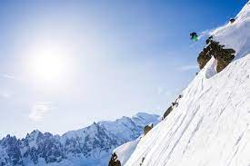

Introduction

Montana is consistently ranked one of the best places to ski in throughout the world but most wouldn't know that because of the small amount of exposure. What is interesting about this is that the state offers the most acreage and with the little amount of people, extremely low prices, and terrific snow in every region.
The question is, how do you choose one in a state that is so high in elevation and has so much to offer whether it is world renown resorts to lifts that are only open every once in a long while. I have personally skied all across the state, since it is where I grew up, especially along the western and central locations which is really the most accessible area for out-of-staters. It is also the most worth it from boundary to boundary as far as the terrain goes.
What I aim to do within this website is to break down my favorite 4 ski resorts in Montana, provide video evidence of how of the actual terrain and what a ski day can typically look like. I will also give some in-depth insight about what makes each of these mountains special and also important information about the location in general.
 Base elevation: 6,100 feet (1,860 m) Skiable area: 2,000 acres (8.1 km2) Longest run: 3 miles (6km)")